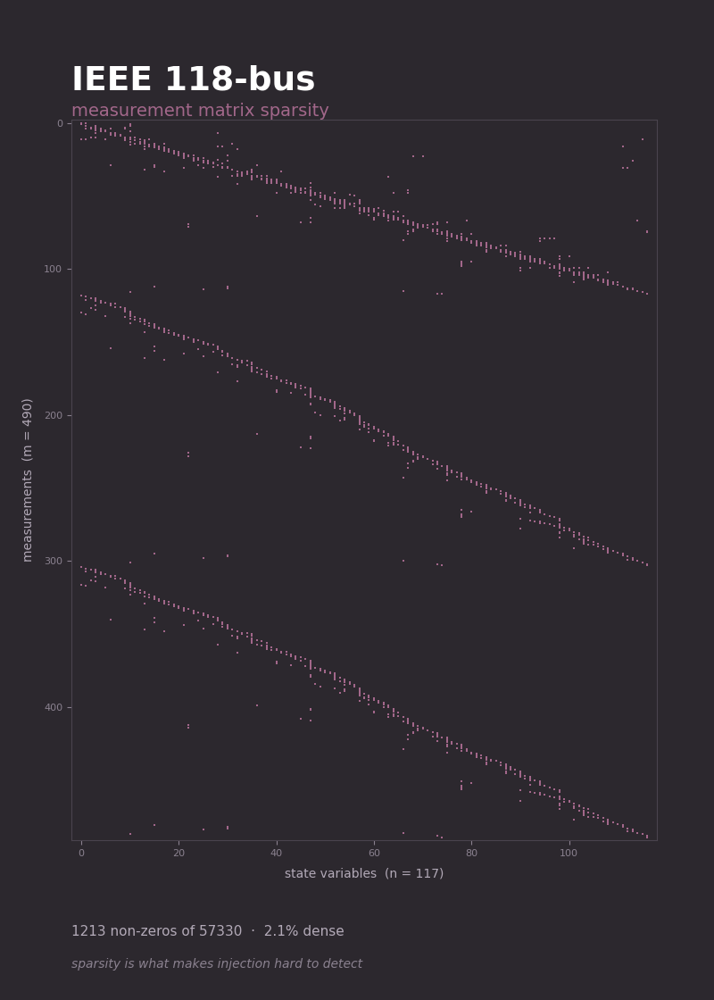
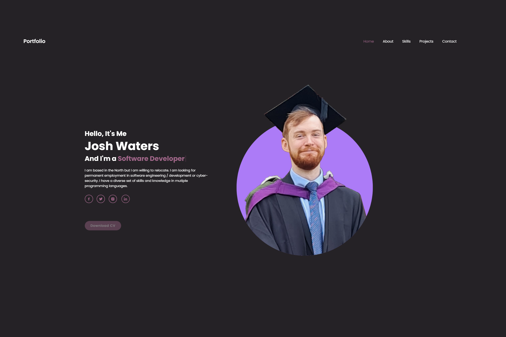
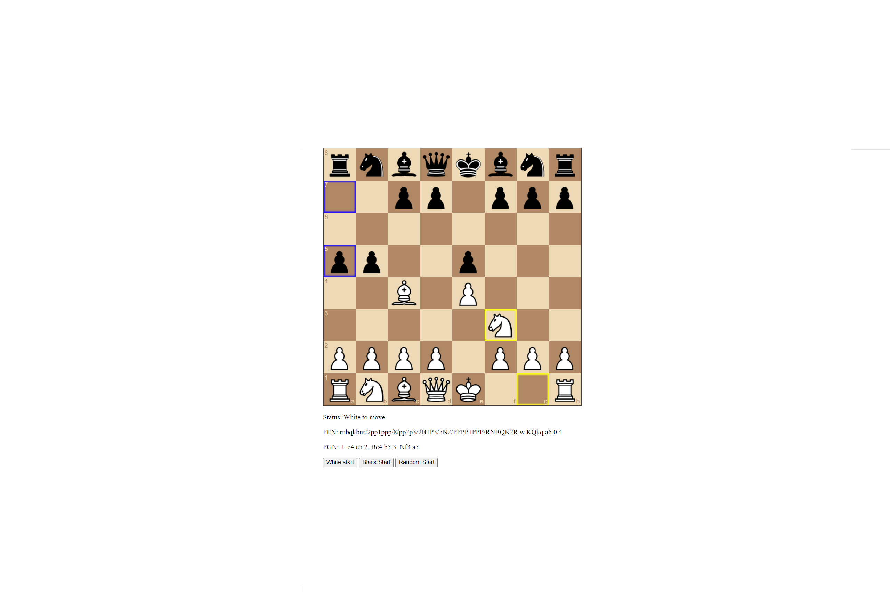
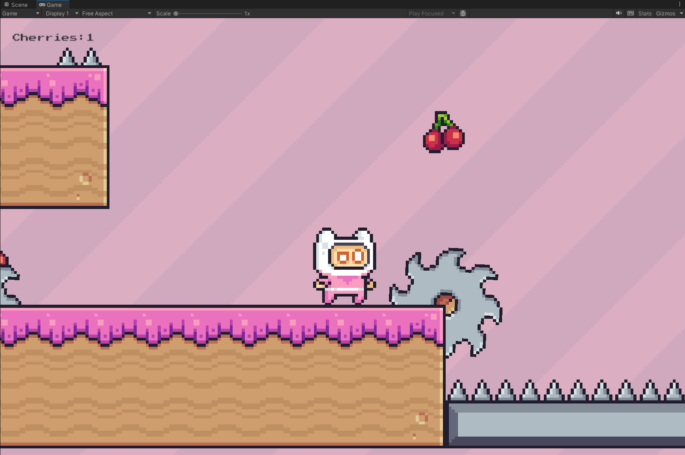
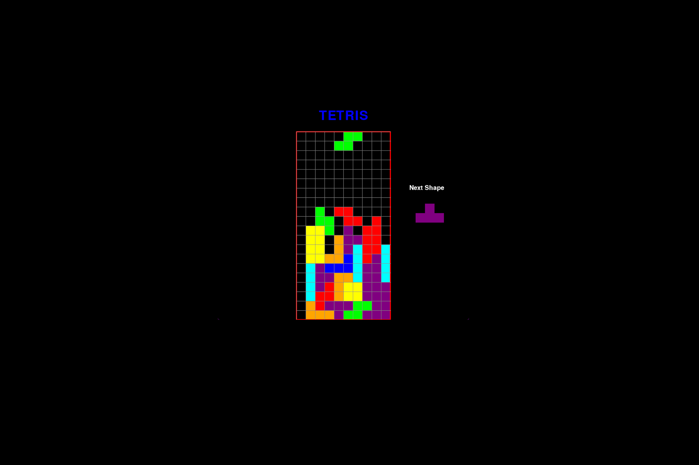

Software engineer currently working on production IoT platforms. Experience includes fully dynamic dashboards, sensor calibration and monitoring tools, and predictive maintenance algorithms. Mechatronics background, heading towards infrastructure and security.
Download CVI build and maintain production IoT tooling at a software as a service company. Projects include an Angular asset management dashboard, an asset predictive maintenance toolkit, and a set of Python utilities that keep hardware in the field working.
I studied Mechatronics, Robotics and Automation Engineering at Sheffield. My dissertation looked at false data injection attacks against cyber-physical systems. That interest has stuck and I am currently working toward a role that brings together infrastructure, DevOps and security.
Outside of work you can usually find me half way up a wall bouldering, out on the streets running, or hunched over a guitar.
Production tooling, sensor pipelines and desktop applications. PyQt6, Pandas, NumPy, SQLAlchemy, Matplotlib and Pytest.
Lead developer on a production asset management dashboard. Component architecture, dependency injection and REST API integration.
Forecasting asset servicing from IoT sensor data, using fast Fourier transforms, moving averages and anomaly detection.
MySQL and MongoDB. Schema design, query optimisation and parameterised access that does not fall over to injection.
Running my own services on my own hardware. The direction I am taking my career: infrastructure, DevOps and security.
Dissertation on false data injection attacks against state estimation in critical infrastructure. Where control engineering meets security.
Drag to explore

Can you feed a power grid false readings without tripping its bad-data detector? Final year project, simulated in MATLAB across the IEEE 30, 57 and 118-bus networks.
View code

Chess engine using chess.js.

My first go at a game. A 2D platformer in Unity and C#, built to find out how the engine fits together. Rough, but playable.
Play itJavaScript, Discord API and MongoDB.

Tetris clone with Python and Pygame.
Python and Selenium browser scripts.